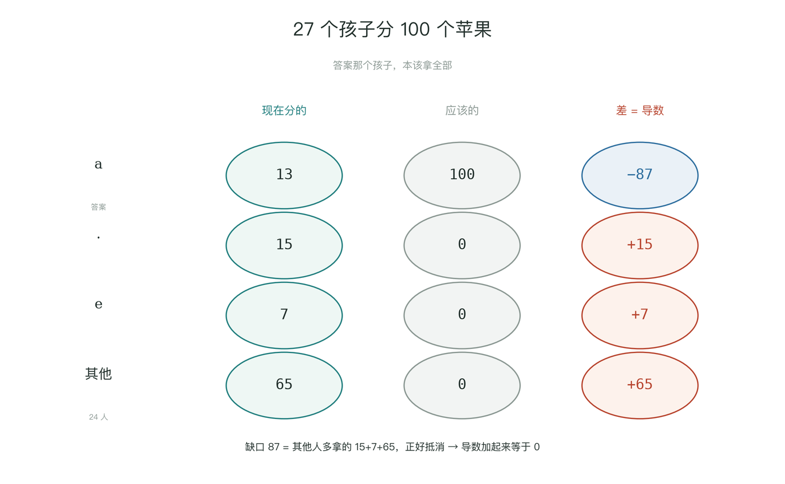
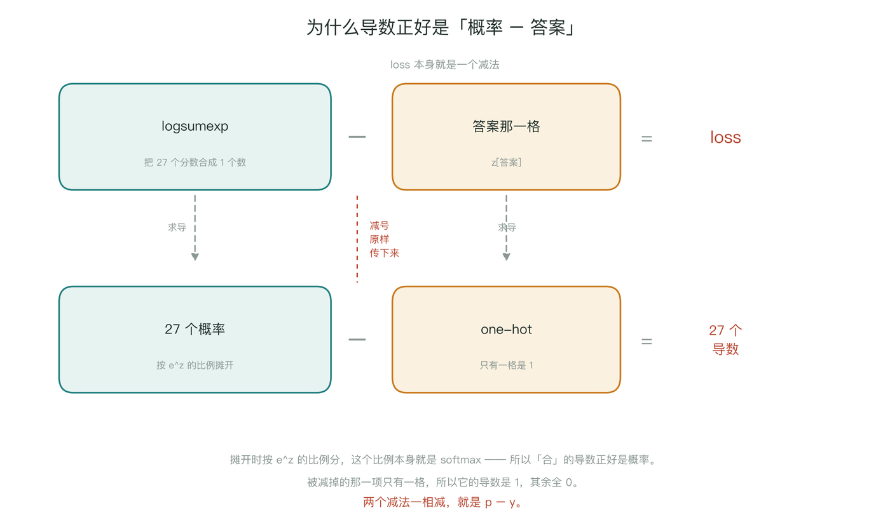
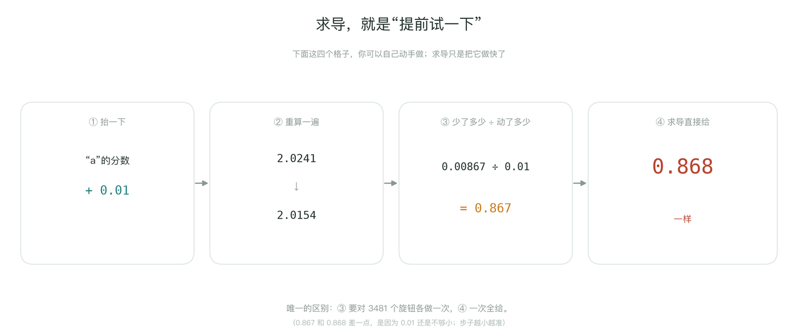
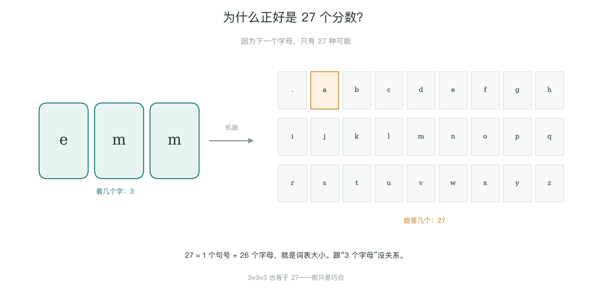
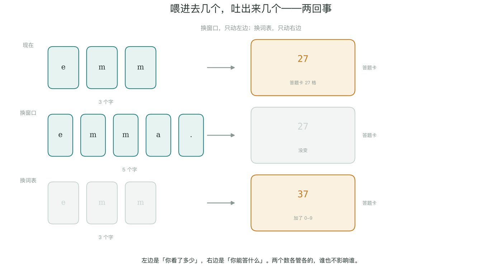
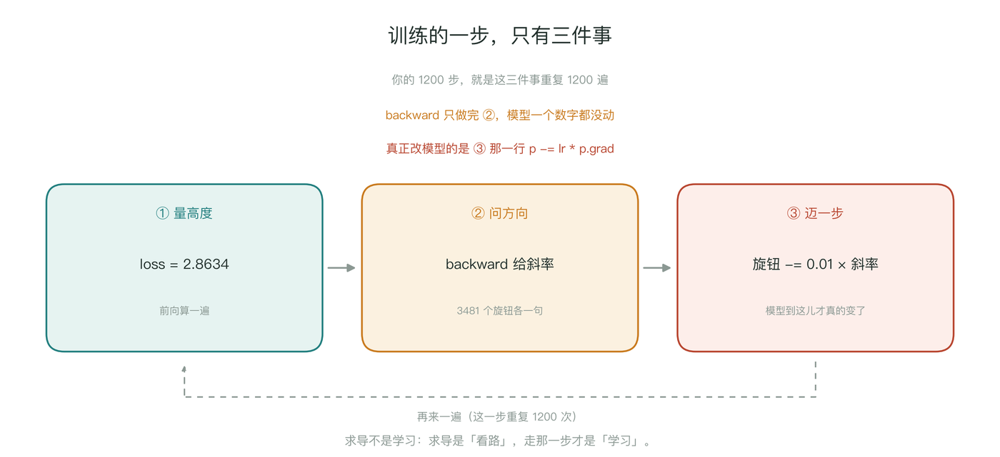
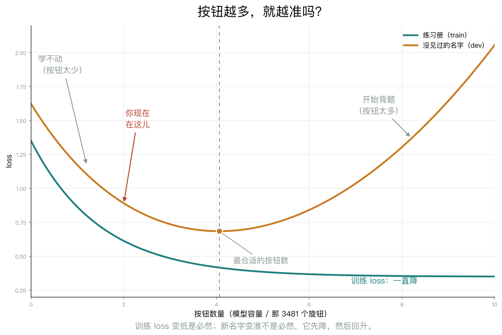

结论只有一行：导数 = 概率 − 答案。因为 loss 的定义是 -log(p[答案])，而 p 是 softmax 出来的；log 和 softmax 里的 exp 互相对消，最后只剩“预测减真相”。
换成具体的账本更好懂：27 个孩子分 100 个苹果，按“嗓门”（分数）分。答案那个孩子 a 本该拿 100，实际只拿 13，差 −87（要补）；其他孩子多拿的 15、7、65，加起来正好 87（要退）。导数就是“实际拿的 − 应该拿的”。

为什么结果这么干净？因为 loss 本身就是一个减法：loss = logsumexp(27 个分数) − 答案那一格。求导时减号原样传下来，两块各自求导再相减：左边摊开时按 e^z 的比例分，这个比例就是 softmax，所以导数正好是概率；右边只有一格是 1，所以导数就是 one-hot。

那“求导”这个动作到底是什么？就是“提前试一下”：把一个分数抬 0.01，重算 loss（2.0241 → 2.0154），少了 0.00867，除以 0.01 得 0.867；而 backward() 不用试，直接给 0.868。唯一的区别是：你自己试要对 3,481 个旋钮各做一次，求导一次全给。

27 不是从“3 个字母”来的，是答案有多少种可能：27 = 1 个句号 + 26 个字母，就是词表大小。（3×3×3 也等于 27，那只是巧合。）
两头是独立的：输入那头由“你看几个字”（窗口长度）决定，输出那头由“你能答几个”（词表大小）决定。窗口 3→5，输入从 6 个数变 10 个数，输出仍是 27；词表加 10 个数字，输出变 37，输入不变。


为什么会有“换窗口”这个旋钮？因为它决定模型能看多远：只看 1 个字，它是“所有 m 后面都可能接什么”；看 3 个字，它能利用“emm 后面几乎只接 a”。但看得多也有代价：3 个字的组合约 2 万种，5 个字约 1,400 万种，数据不够就学不动，算得也更慢。现实里这个旋钮叫“上下文长度”，4K / 128K / 1M 说的就是它。
为什么要换词表？因为表里没有的字，模型永远写不出来。比如名字里有 O'Brien，而词表里没有撇号，它就既读不懂也写不出。大模型按“词片”切，词表有几万个 token，答题卡就有几万格。
micrograd 不“知道”斜率，它只知道“怎么算”斜率。它不认识名字、不知道任务；喂它什么算式，就算什么的斜率。斜率的大小、山的形状，是步骤 4 造出来的。可以记成：micrograd 是计算器，步骤 4 是你按计算器算的那道题。
有了导数，并不等于模型变了。loss.backward() 只把 3,481 个斜率写进 p.grad；真正改模型的是下一行 p -= lr * p.grad。训练一步是三件事：量高度 → 问方向 → 迈一步。

按钮越多就越准吗？训练 loss 变低几乎是必然（小模型是大模型的特殊情况，多出来的旋钮设成 0 就退化了）；但新数据上的表现不是必然，它先降后升——按钮太多就开始背题。而“找不找得到”还取决于步数、学习率、初始化。你这次 3,481 个按钮、只看了 0.21 遍数据，还在“没学够”那一头。
